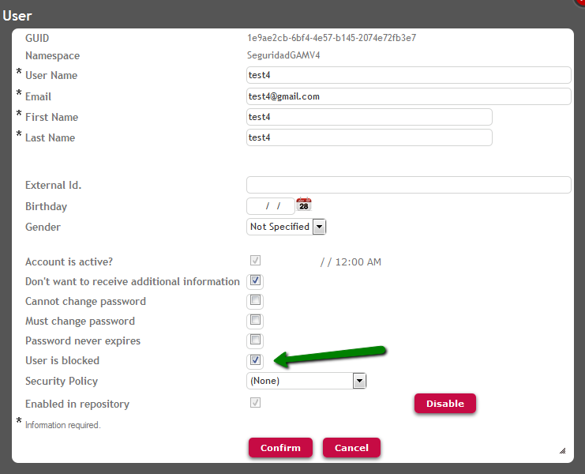

"Login Attempts To Lock User" is a GAM Repository property used to specify the number of login failures until the user is locked. The GAMRepositoryConfiguration web panel (located in GAM Example folder) is an example where this property is used. ExampleThe way to use it in GeneXus code (by using the GAM API) is the following: &Repository.LoginAttemptsToLockUser = &LoginAttemptsToLockUser When blocked, the user needs to be un-blocked by the Administrator of GAM Web Backoffice. In GAMExampleEntryUser, uncheck the "User is blocked" property, as shown in the following figure:

|
| Backlinks |
| GAM Unblock User Timeout property |
| Login attempts to lock session Repository property |